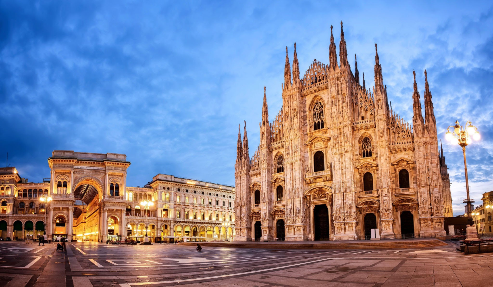
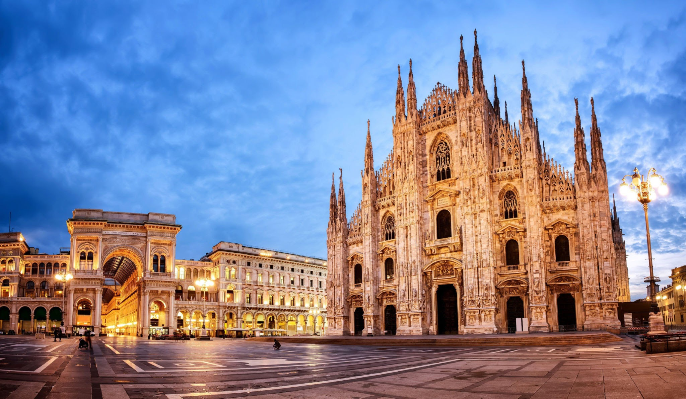

stad van de geschiedenis
Milaan is de tweede stad van Italië en de belangrijkste stad van Noord-Italië. De naam komt van het Latijnse Mediolanum. Dit betekent "in het midden van de vlakte" en verwijst naar het feit dat de stad midden in de Povlakte ligt.
Milaan is de hoofdstad van Lombardije, een van de meest ontwikkelde regio's van Italië. Tevens is het de hoofdstad van de provincie Milaan. De stad zelf heeft ongeveer 1,3 miljoen inwoners, maar met de omliggende stedelijke gebieden erbij gerekend komt men op vier miljoen.
 
